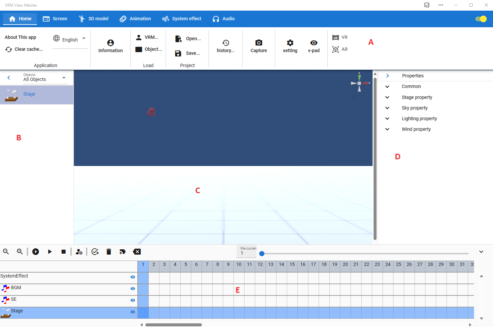
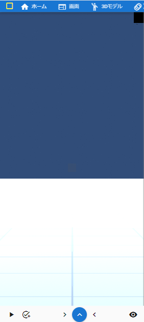
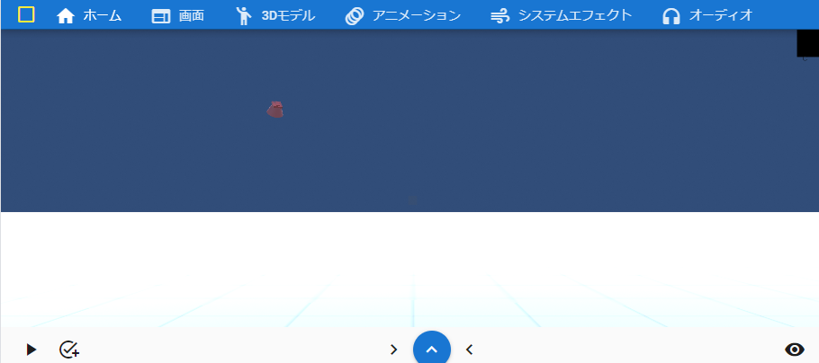

6.1. Main screen
6.1.1. Main screen
- A Ribbon bar (tab):
A menu that calls each function of the app.
- B Object list:
A list of loaded VRMs, FBXs, and objects.
- C WebGL:
The screen where VRM etc. is actually displayed. A format called WebGL. Resizable.
- D Property list:
A list of selected VRMs and detailed property changes for each object.
- E Timeline:
animation timeline. Registered keyframes are displayed here.
Note
The WebGL screen displays the center point of the main camera depending on the settings.
B and D can be minimized with their rightmost buttons. (WebGL in C scales accordingly)
6.1.1.1. Mobile viewing
You can use this display mode with [URL]/mui.
Mobile devices with narrow screens, such as smartphones, will display something like these. The left and right panels and timeline panels are initially hidden.
- Devices for which this display mode is suitable:
Smartphones, tablets, phablets (e.g. Galaxy Fold, etc.)
Portrait |
Landscape |
|---|---|
 |
 |
- bottom of screen:
The buttons are arranged in the following order from the left: This is the button for the function that you are likely to use most often.
Animation play/pause
Key frame registration
Object list panel display
Timeline panel display (blue button)
プロパティパネル表示
V-pad panel display
6.1.2. App windows and sub windows
This application consists of a window showing this main screen and several sub-windows described later.
window name |
Window type (web application version) |
Window type (each OS version) |
Window type (mobile viewing) |
|---|---|---|---|
main window |
browser tab or separate window |
other window |
browser tab |
Screenshot |
other window |
other window |
Separate tab |
Pose list |
other window |
other window |
Separate tab |
Batch change of IK position |
other window |
other window |
Separate tab |
gravity settings |
In-app window |
In-app window |
In-app window |
pose tracking |
other window |
other window |
Separate tab |
Video player |
other window |
other window |
Separate tab |
Setting keyframes |
In-app window |
In-app window |
Other tab or in-app window |
Internal storage dialog |
In-app window |
In-app window |
In-app window |
Nnavigation |
In-app window |
In-app window |
In-app window |
In the case of another window, closing the main window (or tab) will also close all the sub-windows that are open at that time.